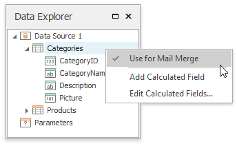
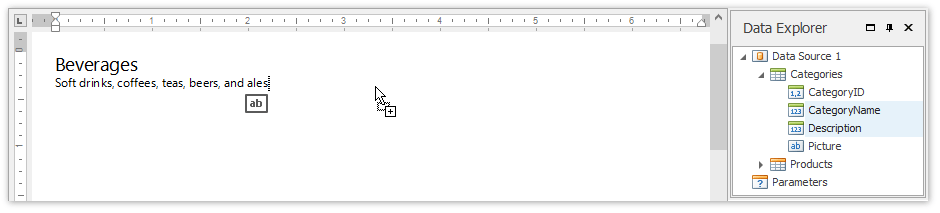
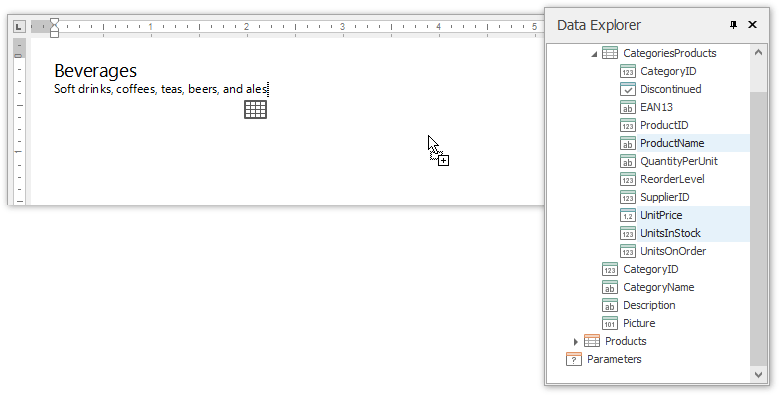
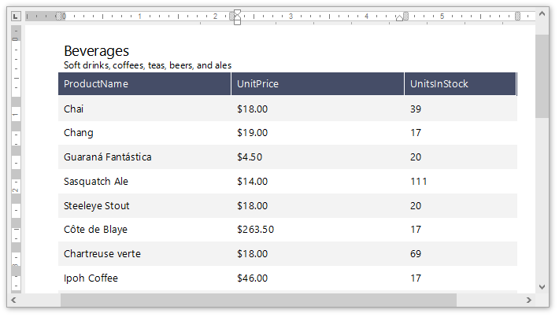
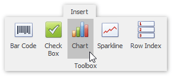
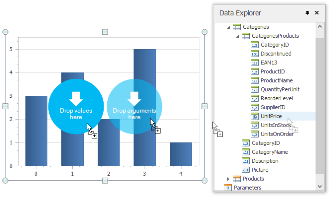
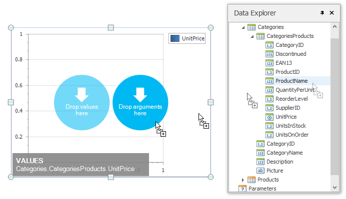

Create a Combined Report Layout
Snap allows you to create a single combined report, incorporating features of different report layout types. There is no limits on how many reports you can combine.
In this tutorial, we will create a combined report that uses the features of mail-merge and chart-based reports.
The tutorial consists of the following sections.
Add Mail-Merge Report Functionality
In this section, we will create a simple Mail-Merge Report.
- Create a new Snap document and provide it with a master-detail data connection.
Specify which data source will be used for mail merge by right-clicking the required data source in the Data Explorer and select Use For Mail Merge in the invoked drop-down menu.

Insert a master report part. To do this, drag-and-drop data fields from the Data Explorer onto the Design Surface.

To insert a detail report part, drag-and-drop fields from a subordinate node of the data source.

The added detail part will have a tabular form by default.

For more information on the creation mail-merge report, see the tutorial Create a Mail-Merge Report.
Add Chart-Based Report Functionality
In this section we will add a Chart to the Snap document.
Click the Chart command in the Insert tab of the main toolbar.

In the created chart, the blue circles correspond to the values and arguments of the chart. Drop one field from a subordinate node of the data source onto the "values" region in the chart...

...and the other onto the "arguments" region.

For more information on the creation of a chart-based report, see the tutorial Create a Chart-Based Report.
View the Result
The Snap mail merge document is now ready. To view the result, click the Finish & Merge button in the Mail Merge tab, and select Print Preview... in the invoked drop-down menu. In the invoked Export Range dialog, select All records and click OK.

The following image illustrates a print preview for the final document.